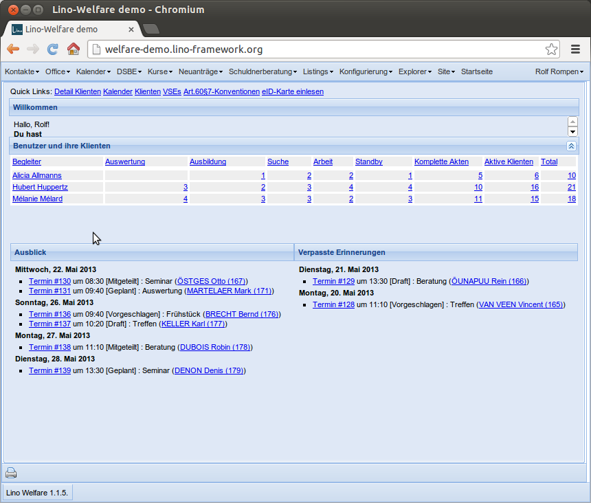
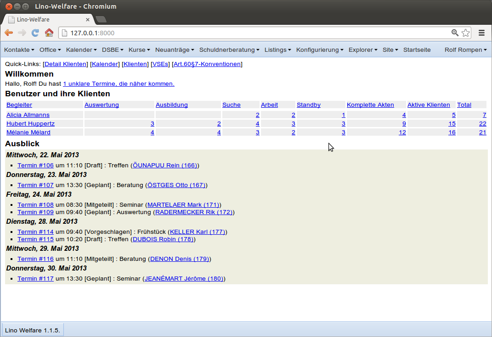

20130522 (Wednesday, 22 May 2013)¶
Statistik-Erweiterungen DSBE¶
Some minor changes from user feedback after the release:
- Modulbezeichnung “Stellen” ändern nach “Art.60§7”
- Detail Vertragsbeendigungsgrund: Liste der Verträge mit dieser Beendigung. Auf einem Vertragsbeendigungsgrund kann man jetzt eine Detail-Ansicht öffnen und sieht dann alle VSEs und Art.60§7-Konventionen mit diesem Beendigunggrund.
- Das Gleiche für die Begleitungsbeendigungsgründe: im Detail-Fenster kann man alle Begleitungen sehen, die diesen Beendigungsgrund haben.
- “Dienstleiter” ersetzt durch “Manager” (nicht “EDV-Verantwortlicher” oder “kann konfigurieren”, aber wie besprochen wird “Dienstleiter” hier nicht mehr benutzt).
Checkin.
Face-lifting¶
I decided to attack a rather little problem which required a rather big effort. Here is the “welcome screen” of Lino-Welfare:
Before:  |
After:  |
{kind=link}
{kind=link}
The little problem was that the “Welcome” panel never showed the text below “Du hast”, it always had a vertical scrollbar. This was because the heights of the panels were fixed (relative to the overall viewport height).
The right picture shows that problem solved. A disadvantage of that solution is that the welcome screen has become more ugly because I fell back from pure ExtJS to self-styled HTML.
Note that it should be possible to solve our little problem without falling back to self-styled html, but the new solution has the important advantage that the dashboard is now configurable through a simple Jinja template. Thje dashboard of an application is something which should be easly adaptable to local needs, and a Jinja template with well-known HTML tags is definitively the way to do this.
To be meditated...
ActivityReport¶
Neuer Befehl . Wir haben zwar gesagt, dass Lino nicht Excel bzw. LibreOffice ersetzen soll, aber ich möchte doch mal sehen, inwiefern sich ein komplexer “Aktivitätsbericht” programmieren und warten lässt. Ist als experimentell zu betrachten.